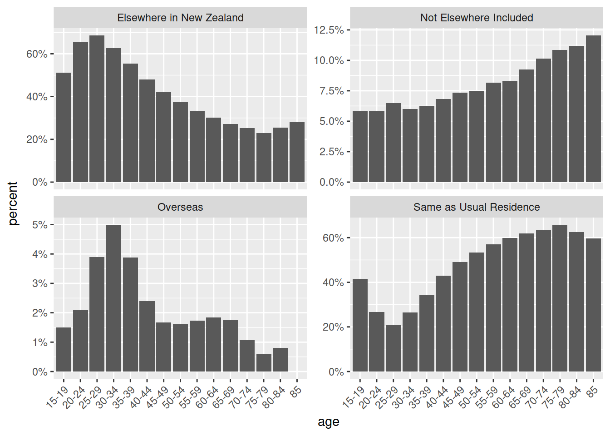

The nzmigration R package contains a single dataset, nz_internal_migration_summary, of summary statistics about internal migration in New Zealand from the 2013 census, from the Spreadsheet File published by Statistics New Zealand.
This is not an official package of the New Zealand government and is not associated with the New Zealand government in any way.
The data was extracted from the spreadsheet by using the tidyxl and unpivotr packages.
You can install nzmigration from github with:
# install.packages("devtools")
devtools::install_github("nacnudus/nzmigration")library(nzmigration)
suppressPackageStartupMessages(library(tidyverse))
suppressPackageStartupMessages(library(scales))
nz_internal_migration_summary %>%
filter(table == "Table18",
var2 == "People of Māori Ethnicity",
var3 == "Total",
var5 == "Total",
var6 != "Total") %>%
separate(var6, c("age", "year"), sep = " ", extra = "drop") %>%
select(-year) %>%
select(var4, age, count) %>%
spread(var4, count) %>%
mutate_at(-1, `/`, .$Total) %>%
select(-Total) %>%
gather(var4, percent, -age) %>%
ggplot(aes(age, percent)) +
geom_bar(stat = "identity") +
facet_wrap(~var4, scales = "free_y") +
scale_y_continuous(labels = percent) +
theme(axis.text.x = element_text(angle = 45, hjust = 1))
#> Warning: Removed 1 rows containing missing values (position_stack).